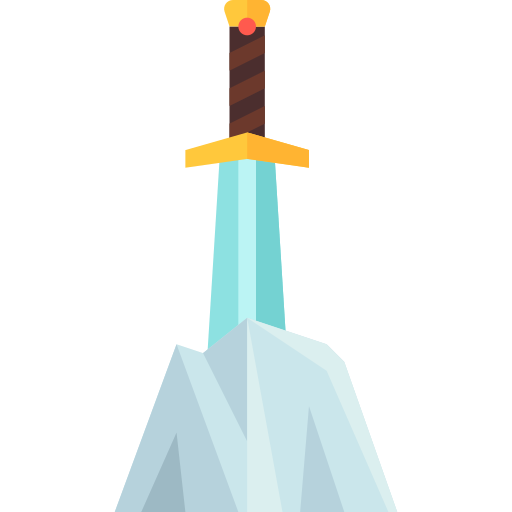
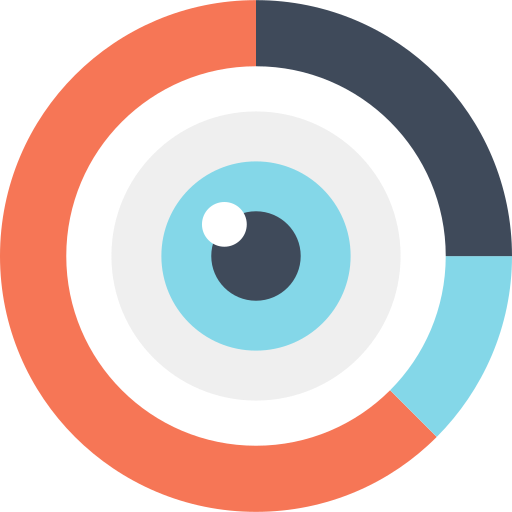
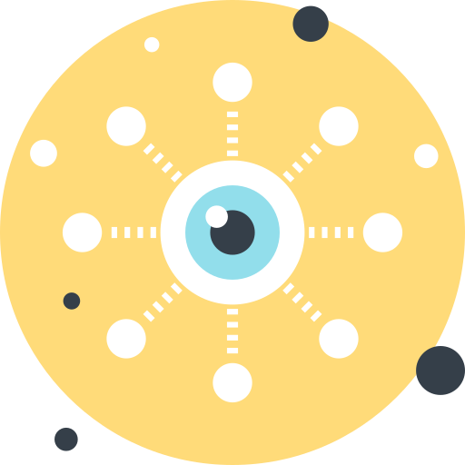
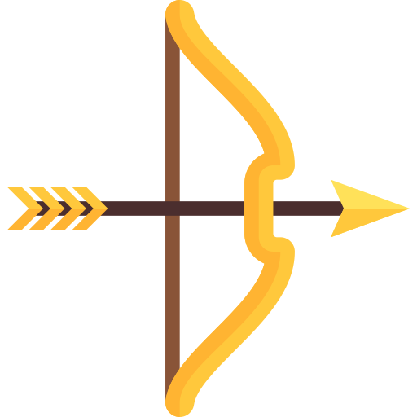
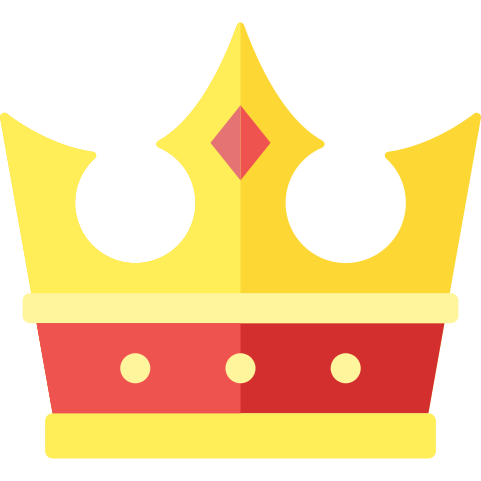
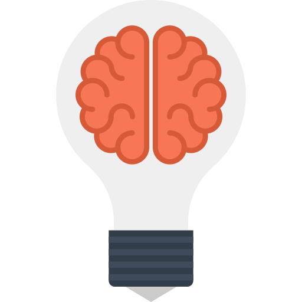

~Kinan Whyte~
:: Front-End Developer & Designer ::
Skills
Languages/Technologies:

Javascript | JQuery | AJAX | HTML | CSS | SASS | SCSS | ReactJS | Ruby
React Native | Flux | Redux | Express | Node.js | Ember | JSON API
Electron | PhoneGap/Cordova | Progressive Web Applications
Software Engineering Fundamentals:

TDD | Git | Webpack | Web Application Deployment | Build Tools
Integration Testing | Data Storage | Websockets | Web Components
ServiceWorkers | Workflow
Design Skills:

UX/UI | Wiring/Prototyping | HTML5 Canvas | Typography | Sketch | Flexbox
Accessibility & ARIA | D3 Data Visualization | HTML5 Media APIs:
Web Audio/Video API | Geolocation API
Soft Skills:

Leadership | Teamwork/Collaboration | Strong Pairing Experience
Public Speaking | Project Management/Organization | Time Management
Interpersonal Communication | Productivity | Work Flow
Intention
My current intention is to continue learning fundamentals of powerful emerging technologies. I love designing and building something beautiful from scratch. I revel in creative processes, especially within a team setting. I intend to raise the level of satisfaction and quality of experience of those around me by creating and sustaining authentic relationship with others and the very technology we build and use together.
Focus:
Strong Javascript Fundamentals
Strong Experience with ReactJS & Redux
Strong CSS/SASS Techniques
Full Stack Javascript: ReactJS, SQL, Node.js/Express
Strengths
I value my personal growth and evolution. My strengths define how I connect to this value, other people, and the world I live in. At the core of social progress, I a see great need for the users of new technology to participate in the development process with greater awareness of how it effects the way we interact with our surroundings and each other.
Having a deep interest in human consciousness, philosophy, and human behavior, I have come to greatly appreciate a larger focus on each person's strengths as a means to bridge socio-cultural gaps. Gallup's StrengthsFinder was founded on 50 years of researching human behavior. Below, you'll see a fairly accurate synopsis of my own aptitude based on these assessments and other insights.
Achiever

Stamina in working through projects;
Immense satisfaction in being busy and productive;
Love for completing tasks; Fulfillment from accomplishment;
Strong inner drive = innate source of intensity, energy, and power enables
him to set the pace and define productivity levels for others around him
Ideation

Fascinated by ideas; Finds connections b/n seemingly disparate phenomena.
Creative and appreciates originality;
Relishes in free-thinking experiences such as brainstorming and discussion;
Natural capacity to consider issues from multiple perspectives;
Thinks outside the box and views the world upside down and inside out
Learner
Detective; Devotes attention to uncover facts, evidence, and the big picture
Curiosity attracts interesting sources of information:
people, print, internet, formal classes, casual conversations, or experiences
Thirsts for new ideas and knowledge; Can dive into study with abandon
Poring over information inevitably leads to mastery of skills and concepts
Command

Strong presence; Can take control of a situation and make decisions;
Taking charge comes naturally; Sees what needs to be done;
Will speak up and is not frightened by confrontation;
Understands that confrontation is the first step to resolution;
May push to take risks, yet challenges others to be realistic and honest;
Willing to take a stand and lead
Intellection

Introspective and appreciative and delighted in intellectual discussions with
leading thinkers on theories and insights;
The "life of the mind" appeals greatly;
Emotional awareness sharpens thinking; Thinks with head, feels with heart;
Knack for giving credit to those who make key points that advance everyone's understanding of a theory, concept, or idea
Connectedness
Faith in the links between all things;
Often accepts that which cannot be fully explained using logic, being
confident that things are linked together for a purpose that may or may not be revealed;
By nature, is inextricably tied to teammates, seeing individual and group success as hinging on each other;
Appreciation of uniqueness and commonality
Restorative

Adeptness at dealing with problems;
Being able to figure out what is wrong and resolve it is a perfect match for a role in
medicine, consulting, computer programming, or customer service;
Consistently has work in either one of these careers his entire working life;
Love to solve problems and is energized by the advent of bringing something back to life or rekindling vitality
Hobbies
I love to travel--I have explored over 20 countries, 4 of which I have lived in for at least 4 months (Switzerland, Thailand, India, Australia). Whether it's meeting new people from outside of the country, embarking on a great outdoor adventure, or exploring diverse cultural traditions, I am thrilled to visit new places.
I am deeply inspirined by exploring new perspectives and can often be found with a camera, capturing experiences, surroundings and beautiful urban or natural landscapes.
If you don't find me on a bike, in a new country, or with a camera, you can most likely count on me being on the ski slopes.
Photo Gallery